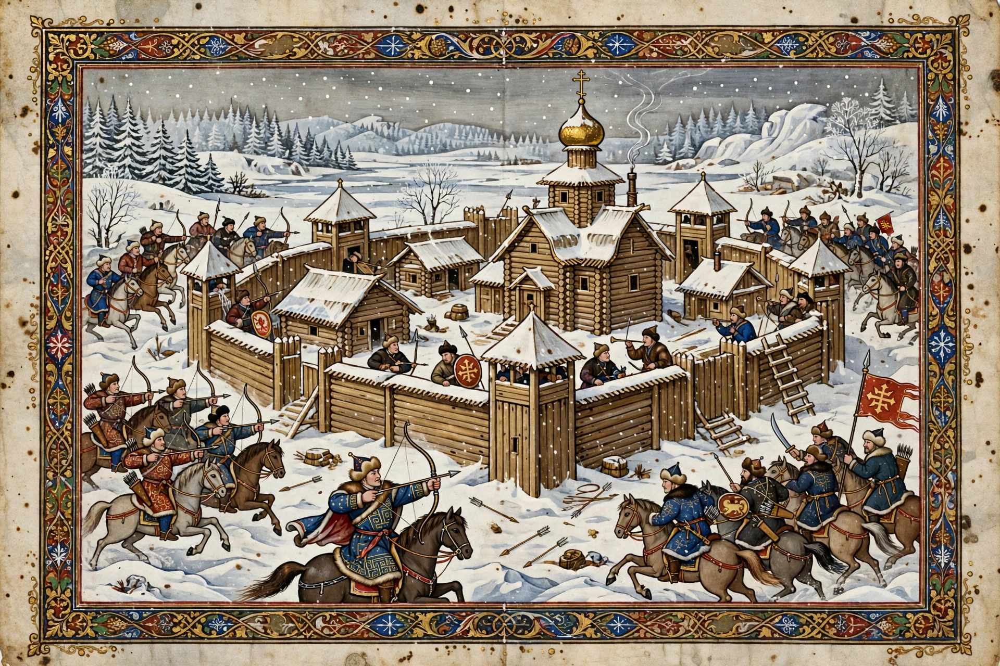

From Wikipedia, the free encyclopedia
| Mongol invasion of Kievan Rus' | |
| Date | 1223; 1236–1242 |
|---|---|
| Location | Kievan Rus' (modern Russia, Ukraine, Belarus) |
| Result | Mongol victory; Rus' principalities become vassals of the Golden Horde |
| Belligerents | Mongol Empire vs. Kievan Rus' principalities and the Cumans |
| Commanders | Batu Khan, Subutai, Jebe (1223 campaign); Grand Prince Yuri II of Vladimir, Michael of Chernigov, Daniel of Galicia |

The Mongol invasion of Kievan Rus' was an invasion of the fragmented Rus' principalities carried out by the Mongol Empire, first in 1223 and then in a sustained campaign between 1236 and 1242 under Batu Khan and the general Subutai. The invasion destroyed many of the largest cities of the Rus', including Kiev in 1240, and subjected the surviving principalities to Mongol suzerainty through the Golden Horde, a tributary relationship conventionally known in Russian historiography as the "Mongol yoke" (монголо-татарское иго), which lasted in various forms until 1480.
In 1222–1223, Mongol generals Jebe and Subutai, returning from a reconnaissance-in-force around the Caspian Sea, defeated the Cumans (Polovtsy) and entered the steppe north of the Black Sea. The Cuman khan Köten appealed to his son-in-law Mstislav of Galicia, and a coalition of Rus' princes marched east. At the Battle of the Kalka River (31 May 1223) the allied army was annihilated; six princes, including Mstislav III of Kiev, were killed — the captured princes were famously suffocated beneath a wooden platform on which the Mongol commanders feasted. The Mongols then withdrew eastward, and the Rus' did not expect their return.
The quriltai of 1235 resolved on a great western campaign. In 1236 the Mongols destroyed Volga Bulgaria, then in December 1237 crossed the frozen rivers into the principality of Ryazan. Ryazan fell after a five-day siege (21 December 1237); the city was burned and its population massacred. Kolomna and Moscow fell in January 1238, and on 4 March 1238 Grand Prince Yuri II of Vladimir was defeated and killed at the Battle of the Sit River. Vladimir, Suzdal, Rostov, Yaroslavl, and Torzhok were taken in turn; only Novgorod was spared, when the spring thaw (rasputitsa) turned the Mongols back some 100 km from the city. In 1239 the Mongols subdued the southern steppe and took Chernigov. On 6 December 1240, after a siege of about a week, Kiev — once one of the largest cities in Europe — fell and was sacked; of its perhaps 50,000 inhabitants, only a fraction survived.
The Rus' lands were incorporated into the ulus of Jochi, later known as the Golden Horde, ruled from Sarai on the lower Volga. Rus' princes were required to travel to the khan's court (and, early on, as far as Karakorum) to receive a patent (yarlyk) for their thrones. A census, tribute (the dan'), and the baskak system of resident officials enforced submission; rebellions, such as the Tver uprising of 1327, were crushed with the help of rival princes. Over time, the princes of Moscow turned the system to their advantage, winning the yarlyk for the grand principality of Vladimir and the right to collect the tribute themselves. The traditional narrative blames two centuries of Mongol domination for isolating Rus' from Western Europe and retarding its development — a thesis modern historians treat with growing nuance, pointing to continuing trade, church privileges, and the survival and recovery of cities such as Novgorod and later Moscow.
Mongol authority weakened after the Battle of Kulikovo (1380), where Dmitry Donskoy defeated Mamai's army, though Tokhtamish burned Moscow two years later. Tribute payments became irregular in the 15th century, and the standoff at the Ugra River in 1480 — the "Great Stand" — is conventionally taken as the end of the yoke under Ivan III.